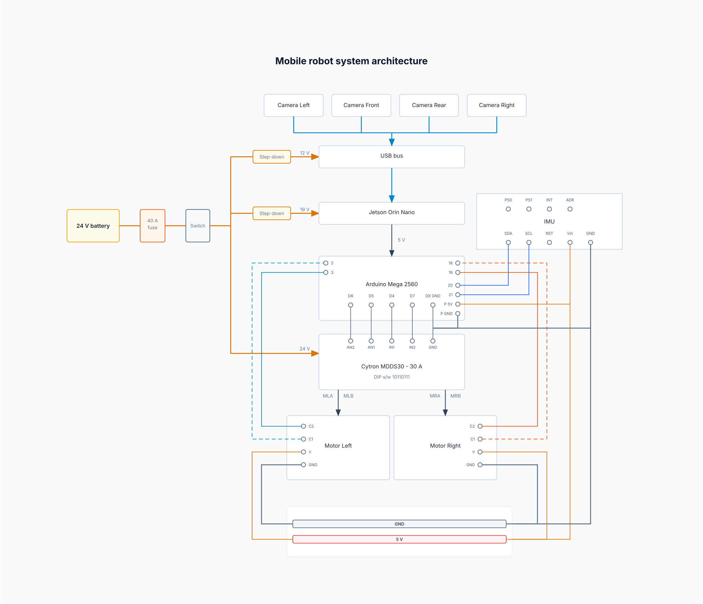

University of Wisconsin–Madison · CS 766 Computer Vision · Spring 2026 · Student ID 9075788365
Camera-based autonomous navigation for MR patient tables
Vektor is my phantom differential-drive cart (~300 kg-class tables would reuse the algorithms later). Tables are awkward to maneuver; staffing is tight (~16 % MR technologist vacancy in survey data cited in my proposal) and ergonomic injury rates are high. A GE-internal lidar prototype already proved autonomy is possible and suggested moving toward cameras. I built toward that suggestion on real hardware with ROS 2, RTAB‑Map, and Nav2.
Diagrams Figures 1–2 below follow the midterm TikZ diagrams (hardware integration + perception/NAV pipeline), redrawn here as standalone SVG block figures. Figure 3 is the repo power/wiring schematic for pin-level detail.
Abstract
Hospitals already run autonomous logistic robots that don’t resemble patient tables—the gap is modality and safety culture, not ROS packaging. Lidar prototypes at GE narrowed the autonomy question down to reproducible ROS 2 + Nav2 behavior; cameras add RGB so people and carts can hopefully be distinguished later when semantic overlays land in costmaps (SCRFD / YOLO-style heads running on-camera).
Proposal scope asked for perimeter cameras so nothing sneaks beside the phantom footprint; Intel RealSense D435i sketches became Luxonis OAK‑D rigs because disparity + neural offload on Myriad X eased USB and GPU contention on the Jetson. Midterm work proved dual cameras streamed at ~15 fps stereo without USB collapse after NVMe relocation; motor integration survived a burnt Cytron MDDS30 from a mis-wiring day the write-up refuses to bury. Final integrations add left/right periphery analogous to proposal corner coverage—the same occlusion argument GE mentors signed off early.
Problem and research question
A 2‑D lidar slice can’t tell a moving person apart from drywall if geometry overlaps; depth + appearance has a puncher’s chance of encoding “give humans extra clearance”. The counter-risk is brittle visual SLAM in white hallways—you lean on RTAB‑Map knobs, IMU bridging, occasional depth-derived odometry, and honest characterization when lighting wins.
Central question: Can perimeter RGB‑D autonomy + Nav2 on a phantom cart hit proposal-grade quantitative targets (navigation success, path inefficiency multiples, deliberate obstacle rehearsals, sane mapping drift, latency near 75–100 ms on paper versus hardware)? If yes, transferring stack responsibility to heavier magnet-qualified hardware is plausible; if no, failures are enumerated in prose instead of waved away as “deployment detail”.
Changes since proposal / midterm
- Sensors: RealSense plan → DepthAI pipelines on OAK‑D stereo heads with camera-local inference.
- Camera rollout: Midterm concentrates on longitudinal front/rear pairs documenting bandwidth and calibration chain issues; codebase launch stories expand to flank/rear depth-to-scan arcs matching four-corner occlusion logic.
- Storage: NVMe replaces SD/eMMC choke points so logging + multi-camera IO stop fighting the same bottleneck.
- Drive electronics: Arduino Mega + Cytron MDDS30 dual H-bridge + encoder DC gearmotors; incident report in midterm about a dead driver after 24 V hit logic inputs.
- Experiments still binding: ≥20 trials, success rate target >80 %, path length ratio, obstacle drills, map sanity, latency audit—same bullet list as proposal but now tied to lab logs instead of intent.
Hardware integration
Figure 1 copies the midterm hardware story: four OAK placements sketched with lateral units dotted as “planned” while front/rear were live at the midterm snapshot; final software brings peripheral cameras online for coverage matching the original proposal. Jetson ingests USB3 streams, exchanges serial velocity and odometry with the Mega, and the Cytron stage outputs traction power to paired gearmotors feeding encoders back into the MCU loop.

Figure 1. Integration diagram (SVG reinterpretation of midterm TikZ hardware figure).
Software ↔ firmware boundary
Ubuntu 22.04 hosts ROS 2 Humble (DepthAI SDK v3, RTAB‑Map, Nav2, RViz). Arduino side handles quadrature timing, joystick reads, ultrasonic guard inputs, PWM out, and sane defaults when supervisory serial drops—all straight from documented midterm scope.
Vision stack and autonomy pipeline
Figure 2 mirrors the TikZ “three lane” storyline: disparity depth feeding projected obstacle layers; RGB nets running on-camera; IMU aiding SLAM; Nav2 absorbing layered costmaps; serial motor chain closing the loop. Legend cues match the dissertation-style figure: solid rectangles for host code you can git-clone today, dashed for Myriad offload, dotted for integrations still described as phased in prose when the screenshot was exported.

Figure 2. Software pipeline counterpart to midterm computer-vision TikZ artwork.
Stereo specifics worth naming
Extended disparity buys corridor reach; sub-pixel disparity tightens doorway clearances; depth frames clip around 10 m visually.
Scripts like dual_stereo_depth.py echo midterm narration—paired cameras, disparity confidence checks, MJPEG grabs for graders who dislike reading bagfiles.
Neural overlays
Spatial detection fuses SCRFD/YOLO families with disparity for XYZ tags in millimeters while keeping CUDA idle for slam graph work—explicit midterm justification for swapping away from laptops without monster GPUs tethered overhead.
Mapping vs Nav2 usage
SLAM-heavy launch configs log maps via technologist-ish manual driving; navigation configs swap planners once grids exist. RViz clicks pose goals the same way class demos advertise; joystick topics preempt autonomy without restarting launch graphs. Dock / alignment experiments exist in tree for repeatability when charging infrastructure appears—course rubric cared more about repeatable navigation evidence than docking polish.
Debugging war stories
- NVMe bootloader archaeology on Jetson Orin Nano SKU-specific notes—tedious but mandatory once pipelines needed simultaneous capture + ROS logging.
-
OAK devices boot as USB2 until firmware upload finishes;
verify_cameras.pyexists because I initially accused cables instead of reading the manual sequence. - Motor driver smoke from mis-routed traction vs logic—expensive lesson that delayed closed-loop runs about a week while perception scripts kept moving.
- Hallway visual poverty means IMU-assisted bridging inside RTAB-Map cannot be optional hand-waving; depth-only odometry remains a documented escape hatch if photometry fails.
Evaluation checklist
- Success vs abort: Did the vehicle reach goal state without human rescue or unplanned e-stop?
- Path inflation factor: executed length ÷ plausible shortest corridor-friendly polyline.
- Obstacle battery: static furniture + dynamic actors crossing path test costmap latency.
- Mapper drift audit: compare long-loop SLAM layout against tape-measured baseline when available.
- Sense-to-act latency: timestamp plumbing from depth callback to Twist publish—shooting for sub-100 ms p95 when thermal headroom permits.
Supplementary schematic (repository wiring diagram)
Figure 3 predates TikZ refactor—pin-level interconnect from hardware bring-up notebooks. Useful for grounding claims about rail voltages, not redundant with Figures 1–2.

Demonstration video
Packaged excerpt at media/demo.mp4 (hosted here if Git size allows); otherwise graders get an unlisted link through the LMS comment field.
PDF manuscripts
LaTeX sources in repo root: mr_patient_table_proposal.tex, mr_patient_table_midterm.tex.
Rendered uploads:
References
- AMN Healthcare survey (2022) — staffing pressure cited numerically.
- Macavei & Clark (2020), technologist ergonomics baseline.
- Escobar / Moulton / Schmieding GE poster (2023) — prior lidar platform + recommendation trajectory.
- Labbé & Michaud (2019), RTAB-Map methodological backbone.
- Macenski et al. (2023), Nav2 architecture reference.
- Luxonis DepthAI: docs.luxonis.com.
Hosted site repo: github.com/uwnajibakram/vektor-final · Pages: live view.